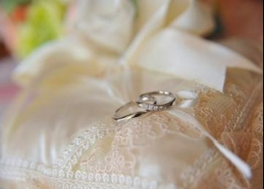

| 「結婚しよ。」: ３０代やさぐれ女子がなぜ理想通りの結婚が出来たのか!？イメージ通りの結婚を引き寄せる！ ハッピーウェディング実現ストーリー | |
| 白石綾美 | |
| White Stone Publishing (2015) | |
イメージ通りに結婚を引き寄せる方法
パッピーウェディング実現ストーリー
「結婚しよ。」
〜３０代やさぐれ独身女がなぜ理想通りの結婚が出来たのか？〜
白石 綾美 編：白石 新
目次
『もう嘘はつけない』
『本来の自分を生きる』
『依存の関係』
『私が大好きなこと』
『（ある意味）運命の出逢い』
『今から君のお家に行ってもいい？』
『理想の生活１００のリスト』
『信じて手放す』
『理想のパートナーシップ』
『恥ずかしがらないこと」
『休んでいいよ』
『自分を心から大切に扱うこと』
『ぬくもり』
『父と向き合うこと』
『頑張らなければ愛されない』
『根拠のない自信』
『運命の出逢い』
『信じて手放す』
『いやいや、ないよ』
『結婚は現実化する』
『ありのままの幸せ』
私は、２０１０年の元旦、
５年間お付き合いしてた方とお別れしました。
ずっと一緒にいたかったけど、いれないだろうなという予感も的中。
あまりのショックで、一週間寝込みまし た... 。
涙が止まらず、全身が痛くて、
もうだめだ！
と思いつつ、うっすらと気付いていたことは、
「もう嘘は付けない」
ってことでした。
もう自分らしく生きることから逃げることはできないな、と。
しっかり本来の道を歩むためのお別れだったなと気付いてしまったんです。
しっかり泣いて、怒りも感じ切ったあと、
よぉし！
っと起き上がりました。
それまで彼との生活が前提で、彼ありきでいろいろな選択をしてきていたので、いろいろ忘れたくて（笑）、当時一緒に住んでいた家を出るときに持っていた物の９割を捨てました。洋服はとりあえず一週間分だけ、靴は一足、本は一冊だけ残して、あとはすべて捨てました。
まったく違うものになりたかったのかもしれません。
家も持ち物も何もなくなった私が、二年後の２０１２年１月１日、運命の人と入籍するとは、
夢にも思っていませんでした。
持ち物の９割を捨て、元彼の家を出た私は、ひとまずシェアハウスを運営している友人のところを訪ねました。精神的にボロボロで、全身に痛みがありました。心と身体は本当につながっているんだなとそのとき改めて感じました。
全身、カサブタがはがれるようなそんな痛みでした。
仕事に向かおうとしても、起き上がる度にフラフラと倒れてしまったこともありました。
涙腺も壊れてしまったのか、常に何もなくても涙が流れてきました。接客業だったので、隠すのに大変でした。とても優しい同僚たちが「裏に行って思い切り泣いてきな」と泣かせてくれました。
そんな状態でしたが、まだまだ私は元彼に未練たらたらで新しい彼女と付き合い始めた彼と会って、ズルズルと関係をつないでいました。
精神的に落ち込んでいたから判断が鈍っていたわけではなく、周りが「会わない方がいい」と言ってくれていたのにも関わらず、自分の気持ちを確かめに行っていたような気がします。
というのも、別れが近付いてることを感じたときから、私の心には、
「やっぱり」
という言葉が浮かんでいました。
私は元彼といたときに、何か向き合わなければいけないものから逃げていたような、そんな気がしていて、依存の関係だということに薄々気が付いていたからです。
会う度に、
「やっぱりそうだ。私はここにいたくないんだ。手放さなければいけないんだ」
そう気付きを強めていきました。
本当の自分となって、自分の足でしっかりと立って、私から周りに与える人になりたいと
ずっと願っていたのに。
その関係は、そんな自分から逃げるための隠れ家のようでした。
私が本来の自分を生きることは、彼にもそれを選ばせてあげること。
そんな気付きは、だんだんと確信に変わっていきました。
別れてすぐの私は、
「今までありがと う☆ 私は大丈夫だから、どうか幸せになってね」
というお利口さんな自分と、
「そっちが浮気したんだから。私は悪くない」
という怒りの自分と、いろいろな自分が交差していました。
新しい道に進むために、まず私は友人のＳくんに会いにいきました。
彼は、女性のためのコーチングスクールの運営をしていて、いつも私に的確なアドバイスをくれる存在でした。
待ち合わせ場所の外苑前の大戸屋で、注文を済ませるなり、私は彼に、彼のしていることを手伝わせてほしいと頼みました。私は早く新しい道に進み、元彼の残像を消したいと思っていました。
Ｓくんは、しばらく私を見つめたあと、こう言いました。
「うー ん... それは嬉しいけれど、あやみんが本当に心から彼に感謝できなければ、一緒にやることはできないな」
唖然としました。
その次に出てきた自分の言葉に、私自身、びっく り ...
「感謝なん て... できるわけないでしょーーー ー‼ （号泣）」
大戸屋中の人の目線を感じながらも、とめどなく溢れる涙を、私は止めることができませんでした。
Ｓくんは、優しくみつめながら、こう尋ねました。
「あやみん、今、自分のこと、どのくらい好き？」
「３０％くら い... 」
とっさに出てきた答えでした。
「うん。きっと彼もそうなんだと思うよ。お互いが３０％しか自分のことを認めてなくて、
残りの７０％は、相手に埋めてもらおうとしてたんだよね」
私は泣きじゃくりながら、うなずきました。
「でもね、足りない部分は、自分でしか埋めることはできないんだ。だから、いつまでも足りない足りないと、求め続けたんだよね？」
図星でした。
さみしさがどんどん強まっていく関係。
いつまでたっても、埋まらない心の空洞。
「でも ね... 」
そのあとに続けられたＳくんの言葉は、私をどん底から救いあげてくれるものでした。
「その７０％を埋めてあげたいとがんばってた彼の愛は、そこにあったでしょ？」
また涙が溢れました。
今度は、悔しさや悲しさや怒りでなく、深い気付きと感動と感謝の涙でした。
そうだ。
５年間の最後のときが真っ黒な思い出で終わってしまったけれど、ずっと愛してくれていた彼がそこにはいたんだ。
たった３０分ほど前に、怒りの感情全開でこの大戸屋に入った私が、今は全身から感謝の想いが溢れていました。
私はＳくんのもとで彼の事業を手伝い始めました。
ちょうどそのころ、彼の運営するコーチングスクールの講師が、女性支援の一環で新しいセミナーを始めていました。
タイトルは、「男性を愛するということ」。
私はそのセミナーも手伝わせていただきました。そのセミナーで得たことは、私にとってかけがえのない財産となりました。
Ｓくんが言うように、
「自分で自分を１００％満たすこと」
そんな女性を増やすためのセミナーでもありました。１００％満たされた女性が側にいる男性が、どのくらい素晴らしい輝きを放ち、社会に貢献していくのかを知りました。
私もそんな女性となって、パートナーが安心して外に出ていけるようにサポートしよう！
まずは自分ひとりでも１００％満たされた女性になろう！
そんな決意を固めました。
足りない足りないと求めている女性より、満たされて周りにも愛を与えていく女性の方が
はるかに素敵な女性ですよね。
どうしたら、１００％満たされるのか。
そのときから私は自分で自分に問うようになっていました。
自分の弱さに負けて、ふらふらと周りに判断を委ねていたときに、Ｓくんにこんな風に言われたことがありました。
「自分がどんな風に扱われたいのか、考えてみたら？ ありたい理想の自分の姿が、わかってる？」
その言葉を聞いて、気付きました。
元彼と過ごしていた５年間、あまりにも相手に合わせていたため、どんな自分でいたいのか、見えなくなっていました。
私は改めてひとりになって、お気に入りのノートを開き、タイトルにこう書きました。
「私が大好きなこと」
どんな自分でいたいだろう？
何をしているときが一番幸せ？
どんな人と一緒にいたい？
人にどんな風に扱われたい？
書き始めたら、スラスラと出てきました。
１．いつもオープンマインドでナチュラルな笑顔
２．大好きな曲を歌いながら、楽しく料理をする
３．大好きな本を読みながら、ゆっくりお風呂に入る
４．ヨガをして、自分の心と身体と対話する
などな ど... 。
そこに書かれた自分は、それまでの自分とは全然違った自分でした。
ありたい理想の自分の姿を書き出して、私はワクワクし始めました。
そう だ♪ こんな自分でいるときに隣にいる人が、これからのパートナーなんだろう な ♪
２０１０年。
この一年は、今振り返っても素敵な一年でした。
ずっと破りたかった殻を破って、新しく生まれ直したような、清々しい一年でした。
それまで向き合いたくなかった自分の中のマイナスの感情にもたくさん向き合いました。
たくさん泣いて、たくさん怒りました。私は人よりも怒りが少ないんだろうと思っていたのですが、押さえ込んでいただけでした。溜まっていたものが一気に流れ出しました。
しんどいときもあったけれど、なぜかすべての出来事が、私がもっと幸せに生きるための後押しをしてくれているような、優しく包まれているような不思議な感じがありました。
必要なときにほしい言葉や人が助けてくれました。
Ｎさんとの出逢いも、私を導いてくれた大切な出来事でした。
まだ私が失恋の痛手から立ち直れず、あまり人に会いたくなかったころ、仲良しの友人が、パーティに誘ってくれました。気分転換にいいんじゃないかと思ってくれたようでした。あまり気乗りしないので、断ったのですが、友人は、
「あやみんは参加費無料でいいからさ！ おいでよ」
とまで言ってくれました。
そこまで言ってくれるなら（笑）、ということで参加したパーティ。
あまり人と話さず、食べたり飲んだりしてたらいいか な... 。
そう思ってビュッフェの列に並び、お皿に料理をもり始めました。
と、目の前に、ニコニコしながらお皿の向かい側から料理をもる男性がいました。なぜかとても興味が湧いて、その男性をながめてしまいました。
真冬なのに、真っ黒に日焼けした肌。
１８０センチ以上はあろうかという身長。
ニコニコした表情に、私は釘付け に... ！
この 人 ......
なんでこんな焼けてんだ ろ... ？（笑）。
「すご く... 焼けてますよね？」
思わず、声をかけていました。
「あぁ、こんばんは。タヒチに数週間行っててね。成田からそのまま来たんだ」
その男性は、部屋の隅のスーツケースを指差して言いました。
この方が、噂のＮさん。
大切な出逢いでした。
「... な、何をされてらっしゃるんです か ⁉
なんでそんな旅行たくさんできるんです か⁉ 」
思わず、畳み掛けるように質問の嵐。
「あぁ、ちょっと事業が成功してね」
「な、何の事業です か⁉ 」
「... 君は、動物占いはなんだい？」
唐突な質問に、豆鉄砲くらったハトみたいになりながら、
「コアラですけ ど... 」
「やっぱり地球グループか！ 目が鋭いよね」
えーー ー ⁉
なんなんだろう？ 謎は深まるばか り... 。
「どうしたら、そんな生活ができるようになれるんですか？？」
Ｎさんは笑いながら、答えました。
「必死だねぇ～どうなりたいの？」
「理想のパートナーがほしいんで す... 」
しょぼ ん... と小さい声で、私は答えました。
「そっか。じゃ、たとえば今、目の前に理想のパートナーが現れて、「今から君のお家に行ってもいい？」って聞かれたら、君のお家は準備ができてるかな？」
... ... 。
ヤバイ。今はシェアハウスに友達と同居してるし、そんな環境じゃない。
「まずは、その準備をしなくちゃね！」
Ｎさんは笑顔で続けます。
「不要なものは捨てるんだよ。物にも賞味期限があるからね。
お気に入りの洋服も、手にとったときに当たり前になってしまったら、期限なんだ。
感謝して手放さないとね」
... この人、ただもんではな い... ！
気付くと私は、周りの人を呼んで、Ｎさんのプチ講座を開催していました。
パーティ会場の一角で（笑）。
Ｎさんのお話はどれもとても興味深いものでした。
私と、私にかき集められた人たちは、興味深々、聞き入っていました。
「賞味期限がきた服や本やくつを手放すのは、捨てるのではなくて、またちがう形で返ってくるということなんだ。感謝して送り出すんだよ。そうやって、スペースをつくってあげるんだ。環境を整えたら、次にすること は... 」
Ｎさんは私たちにこんな宿題を出しました。
「【理想の生活１００のリスト】を書いてみてください。細かく、具体的に。まるでストーリーのように。オーダーは具体的であればあるほど、通るからね」
みんな、一生懸命メモをとります。
「そしてもう一つ。これもやってほしいんだけ ど... みんな、目をつぶってみて」
私たちはそっと目をつぶりました。
「君が８０歳くらいになって、素敵なビーチを、素晴らしいパートナーと腕を組んで歩いているのを想像してみて。
波の音。
優しい風。
潮のかお り... 」
私はほんとにビーチにいるかのような、心地よさを感じていました。
「そのときにね、君がこう言うんだ。
◯ ◯ さん、ありがとう。
あなたがこんな風にしてくれたから、私はずっと幸せだったわ」
... なんだか、うっとりしてしまいました。
まぶたの裏で、私はまだ見ぬ、顔も見えない将来のパートナーを見上げて、微笑んでいました。
「そしてね、今度は彼がこう言うんだ。
◯ ◯ ちゃん、ありがとう。
君が僕にこんなふうにしてくれたから、僕もずっと幸せだったよ。
その、
【彼が私にしてくれて嬉しかったこと】
【私が彼にしてあげて彼が喜んでくれたこと】
それぞれ、３０個ずつ、書いてみて」
みんな、メモメモ。
Ｎさんの話を聞きながら、将来の素敵なパートナーシップや、理想の生活を垣間見て、なんだか私はワクワクしてきました。
私は早速、パーティの帰りに新しいノートを買い、家に帰って、机の上に広げました。
まず、タイトル。
【理想の生活１００のリスト】
そして、ワクワクしながら書き始めました。
１．キングサイズのベッドで目を覚まして、隣に寝てる旦那さんに朝の挨拶をして、起き上がる。
２．３階建てのおうちの３階にあるベッドルームからおりて、
１階のキッチンの冷蔵庫をあけて、１００％オレンジジュースを飲む。
３．３人の子供たちを起こしに行き、旦那さんも一緒に朝ごはんを食べる。
などな ど... 。
とにかく、超具体的にするように言われていました。
まるで理想の日の一日を、朝からストーリーのように書きました。
スラスラ書き進め、２０個くらいになって、一度ペンを置きました。
少しずつ、ワクワクしながら、大切に書いていこ う ♪
その日は久しぶりにあたたかな気持ちで布団に入りました。。
次の日から、仕事中も電車の中でも、
「理想の生活って、どんなだろ う... ？」
妄想が広がりました。
私はこの幸せアンテナが立つことが、とても大切なんだろうと思うのです。
そのリストを書いている間、いろいろな人の素敵なところを見つけては、真似をしてみようとリストに加えたり、理想の家や旅先を探すため、雑誌を開いたり。幸せアンテナがフル稼働していたのでした。
きっとそんなアンテナには、幸せがたくさん引き寄せられてくるのでしょう ね ♪
１００のリストを書き終えて、すっかりそのことも忘れた１年後くらいに、ノートを開いてみたら、１００のうち４０個くらいが、そのときすでに叶っていまし た ...‼
私がしたことは、書いてワクワクして、ただ毎日を楽しく過ごしていただけなのです。
書いたら、信じて手放す。
このことも必要な気がします。
「どうしたら叶うだろう？ ほんとに叶うんだろうか？」と不安を持つのではなく、書いてワクワクして、信じて毎日を楽しむ。
あとは不思議な力が、すべての準備を整えて未来で待ってくれているのです。
私は同時に【理想のパートナーシップ】についても書き始めました。
８０歳くらいになって、海辺を歩いてるイメージは、ほんと幸せに満たされた時間でした。
書きながら、ふと気づきました。
【彼が私にしてくれて嬉しかったこと】は、スラスラと３０個書けたのですが、
【私が彼にしてあげて彼が喜んでくれたこと】は、１０個くらいから先が進まな い ...
いかに自分を棚にあげて、相手に求めていたかに気付きました。
「してあげられること」を増やしていきたいなと決めました。
この【理想のパートナーシップ】についても、書いている間、幸せアンテナが作動！
身の回りの幸せ夫婦やカップルの、どこが素敵なのかなと、よく見るようになりました。
素敵ポイントを見つけると、
そこ、もらい ～ ♪
という感じで、ようやく３０個ずつ、埋めることができました。
書き始めたときは、元彼のしてくれていたことが脳裏をちらついていましたが（笑）。
８０歳になったときのイメージで、ありえない大きな望みでもかまわないんだ！と大きく枠が広がったときに、ワクワク書くことができました。
ポイントはやっぱり、書き終えて、読んでみて、ワクワクするかどうか、トキメキがあるかどうか、だと思います。
そうやって、理想の生活や、理想のパートナーシップを書いていると、そんな自分が恋のオーラをまとってきます。
そのときに、とても大切なこと。
「恥ずかしがらないこと」
もちろん、照れて赤くなることはかわいくていいのですが、私は極端に照れ屋で、恥ずかしくなると、変に突っぱねてしまうんですね。
それを知ってる友人たち（主に男友達）が、あるとき、わざとこんなことをしてきました。
顔を近付けてきて、「あやみん、今日もかわいいよ」とささやくのです。
私は照れ隠しにわざと笑って「ありがとう～よく言われる！」と返しましたが、それは、友人に言わせると、「受け取っていない」そうです。
照れて跳ね除けるための防御だと。
せっかく褒めてもらっても、心から受け取れないのでは、本当に愛する人からの愛も、受け取れない。
そして、愛する相手は、受け取ってもらえないと悲しいのです。
受け取り上手な人のところに行って、褒めたり、プレゼントする方が、よほど楽しくて、褒めてもらえて、男冥利につきますよね。男性は小さいころから、お母さんが喜ぶには、どうしたらいいだろう？と考えて行動するそうです。
いろいろな行動の判断基準が、「お母さんに喜んでもらうには？？」なのです。大人になると、それをパートナーに実行します。パートナーが笑顔で幸せそうにしていたら、男性は頑張れるのです。
人の褒め言葉を受けとれないのは、セルフイメージが低い証拠。自分にはその価値がないとどこかで思っていたのです。
そこで、私はまず、自分からの愛を受け取る努力を始めました。
今まで様々な方の恋愛相談に乗って来た経験上、恋愛があまり上手ではなく、素敵な出会いを求めている女性の多くが、この同じテーマを持っていることに気付きました。
その彼女たちが同じように抱えているのが「自分が自分への愛を受け取れない」という葛藤なのです。
自分を愛するなんて、ナルシストのすることじゃない？
なんて思っていましたが、自分のありのままの価値を受け取れることとナルシストはちがいます。
私はまず、自分を心から大切に扱うことから始めました。
自分を心から大切に扱うこと。
まず、素敵なかわいい下着や服、靴を買いに行きました。引っ越しのタイミングで、大断捨離を決行していたので、素晴らしいことに、私のタンスにはたくさんのスペースがありました。
そして、自分の気持ちも大切に扱うようになりました。以前は、熱があっても、無理にお尻をたたいて仕事をする、それが社会人だと思っていました。
心の中で、厳しかった父母が、
「早くしなさい」
「人に迷惑をかけない！」
「我慢してがんばりなさい！」
そう叫び続けていて、私はその内なる父母に、叱られないように、自分を叩きながら生活していました 。 あるときふと、今日は、ゆっくりしたいと思っている自分に気付きました。
その自分の声さえ、気付いていなかったのです。
そんな自分に、
「休んでいいよ」
と言ってあげるのは、相当な勇気がいりました。
実際、休んでみたものの、今度は後ろめたさにたえられなくて、苦しくなりました。
そこでひたすらその感情を味わいました。感情のしこりは、見て見ないふりをするといつまでも心にこびりつきます。感情は単なるエネルギーなので、感じて味わったら、ロウソクのロウがなくなったら火が消えるように、ふっと消えるのです。
今までの自分を洗い流すように、たくさんの感情も味わい、手放す作業を繰り返しました。
私は自分の心が喜ぶことを優先させることにしました。
自分をまるでプリンセスかのように扱うのです 。
何もない日でも、お部屋に花を飾ったり。
大好きな香りのバスオイルを買ってきて、ゆっくりとお風呂につかったり。
大好きな音楽をかけて、大きな声で歌いながら、大好きなお料理をしたり。
いろいろなお誘いを受けても、行きたくないときには、ちゃんと断りました。
自分が行きたいところへ行きたいときに行く。
そんな当たり前のことも、自分に許していなかったんですね。
いつも自分の心がここちよい方を選ぶことにしました。
そうしたら、なんだかとても楽で、不思議と周りの人からも大切に扱われるようになったのです。
私が望んでいたように、大切にしてもらえるようになったのです。
そのきっかけは、まずは自分が自分を大切に丁寧に扱うこと。
そう扱われる価値があると認めてあげたからなんでしょうね。
そしたら、自然と褒められることも増えて、
それも素直に受け取れるようになっていました。
２０１０年の夏。
元彼とお別れして半年くらいが経って、感情の整理もついて、自分がどんな自分になりたいのか、だんだんと見えて来ていました。
あるとき、実家で義姉の演奏するクリスタルボウルのヒーリングを受けました。
クリスタルボウルとは、水晶でできたすり鉢状の楽器で、チャクラと合わせて７つあり、それらを叩いて音を響かせ、共鳴させることで身体や精神の不調を整えるヒーリング効果があるものなのです。
７月の誕生日で３３歳になる私は、横になってクリスタルボウルを聞きながら、こんなことを思っていました。
「あー ぁ... 夏は楽しいことがたくさんあるのに、一人でいろんなイベントに行かなきゃいけないのか ～... 」
半分ウトウトしながら、音色に身を任せていたところ、夢をみました。
隣に誰かがいて、私の心はとても満たされていました。
なんだか２人微笑みあっている、そんな光景でした。
不思議なのは、その相手の方が、顔も見えないけれど、そのぬくもりは、体感覚でしっかりと身体に染み付いて、
「あぁ、次に会う人は、こんな優しいぬくもりの人なん だ... 」
と感じていました。
演奏が終わって、目を開けてからも、そのぬくもりは鮮明に身体に残っていました。
ヒーリング後の感想を発表する場で、私はそのぬくもりの話をしました。
すると義姉はビックリして、
「今回のテーマはよりよいパートナーシップをイメージして演奏していたの」
と言ってくれました。
私はまだ見ぬその出会いにワクワクして、このぬくもりを忘れずにいよう！ と決めました。
ある日、コーチングスクールをともに運営していたＳくんがふとこんなことを言いました。
「あやみん、ほんと別人のように変わったね。」
「ありがとう。Ｓくんのおかげさまだよ ～♪ 」
「... あやみん、あとお父さんと話してみたらいいんじゃないかな？」
... ？？
私の何からそれを感じたのかわかりませんが、インスピレーションというのでしょうか。
Ｓくんは父親と向き合うようにすすめてきました。
私もなんとなく、その必要性を感じていました。
そのときの私は、何か用事がなければ、父とはメールも電話もしない関係性でした。
特にそのことには何も感じてはいませんでしたが、常に頭に父親のことが浮かばない不自然さは感じていました。
あえて排除してしまっているかのよう な ...
Ｓくんに言われて、心が動揺した自分に驚いていました。
「父と向き合 う... ？」
何か壮大なテーマを突きつけられたような気がしていました。
ふと携帯を手にとったら、なぜか滅多に連絡のこない父から、着信が来ていました。
...... ‼ （鳥肌）
しばらくモヤモヤを味わいながら、父について想いをはせてみました。
好きなことを散々させてもらってきた な ...
それなのに、時々うっとおしくて、一緒に住んでたとき、口を聞かない時期もあったな。
そのときのことを思うと、胸がきゅ～っと痛くなりました。
父は、祖父から受け継いだ会社の社長となるため、やりたかった絵のことも諦めたと聞いたこともありました。子ども５人を養うため、危なかった会社の経営を持ち直すため、社員を路頭に迷わすことがないように、一週間寝ずに仕事したこともあると聞いたこともありました。
そのことを思うと、申し訳なさで涙があふれてきました。
私は父に電話をかけ直しました。
「久しぶり」
何ヶ月ぶりかに聞く父の声に、私はドキドキしながら、用件を聞きました。
地元の祭りの会議についての簡単な内容でしたが、私の頭には、先ほどのＳくんの言葉がリフレインしていました。
― ― あやみん、お父さんと話してみたらいいんじゃないかな ？ ――
「じゃ、よろしくな」
電話を切ろうとした父に向かって、私は切り出しました。
「あ、あの ね... ！」
「ん？」
なんと切り出せばいいのかわからず、こんな変なことを口にしていました。
「今日、友達に、お父さんと話したらいいんじゃない？ って言われたの」
「... そうか。いつでもこい。じゃ。」
ガチ ャ ...
... ツ ー... ツ ー... ツ ー ......
切れてしまいました。
............
いやいやいや（笑）。
私は意を決して、かけ直しました。
「今、話したいんだよ」
「そうか。何か言いたいことがあるなら、紙に俺の顔を書いて、そこにぶつけなさい」
父は自宅で心理学の勉強会もしている人なので、そんな提案をしてきました。
「ちがうよ、私は生身のお父さんと話したいの！」
「わかった。なに？」
「なんだか、お父さんのことを考えていたら、好き勝手させてもらって、申し訳なさで涙が出てきたんだ」
私はまた溢れてきた涙をふきながら、言いました。
すると父は、恐る恐 る ...
「怒りはな い... ？」
と。
笑ってしまいました。
父も怖かったようです。
私は父に、こう言いました。
「私たち兄弟は、好きなことばかりさせてもらって、その上まだ何もできてなくて、迷惑ばかりかけ て... お父さんはやりたいこともやらないで文句も言わず、子どものためにたくさん働いて、その上いろんなこと言われて、申し訳なく て... 髪が薄くなったのも、私たちのせいじゃないかっ て... （泣き笑い）」
父も笑いました。
「俺はいつでも、やりたいことをやってきたよ。人生楽しんでいるよ。綾美は自分のやりたいことに忠実でしっかりと歩んでいると安心しているよ」
この言葉に、私の中で何かが緩んだ気がしました。
ずっと、父は私のことをダメな子だと思っているんじゃないかと思い込んでいました。
それが単なる思い込みだったと、このときはじめてわかったのです。
全身から染み出るような、涙が溢れました。
「ありがとう」
父も、
「こちらこそ、ありがとう」
あたたかな気持ちで、電話を切りました。
いろいろな本やセミナーでも言われていますが、父親との関係性を見直すことは、素敵なパートナーシップを組むためにとても重要です。
私も身をもって体感しました。
私は父に、ダメな子だと思われているんじゃないかと思い込んでいたので、ある意味怒りを伴いながら、「がんばって見返さなけれ ば‼ 」と、力んで生活していました。
過去のパートナーにも、必要以上に、私の力を見せる努力をしていました。
「私はこんなこともできるの」と誇示していました。
その裏返しの心は、
『私は認められていない」
↓
『認められた い‼ 」
↓
『頑張らなければ愛されない」
だったようです。
ただありのままの私を愛してくれていたパートナーに対して、
「そんなのウソ。こうしたら愛され る⁉ こうしたらど う⁉ 」
と突きつけていたのです。
ただありのままで愛されてることを受け取ることができていなかったのです。
だから、パートナーからどんなに愛をかけられても、いつまでも不安でした。
自分で自分に愛されることを許してなかったのですから。
２０１０年１２月３１日。
私は友人宅に遊びに行きました。
「今年はほんと、たくさん自分と向き合ってきた な... 」
感慨深い大晦日でした。
ふと、友人が数秘術の本を取り出し、私の２０１１年の運勢を見てくれました。
「うん、なかなかいい運気みたいだ ね♪ あ、あやみん！ １月に運命の人と出会うって、書いてあるよ！」
えー ー ‼
なんと、来月です。
というか、明日から１月、新年です。
私はとてもワクワクしながら、新年を迎えました。
１月はとにかく、理想の自分が大好きなことをたくさんやろう！ と決めました。
大好きな自分でいるときに出会える人がパートナーだと確信していました。
ヨガや料理、大好きな人たちに会う、好きなお店に出かける、自分へのご褒美をし続ける。
私が以前に書いていた、理想の自分のやりたいことをしながら、毎日を過ごしていました。
その中で、地球交響曲（ガイアシンフォニー）という映画のイベントがありました。
自主上映映画で、ドキュメンタリー形式のその映画のことが大好きだった私は、ガイアシンフォニーの監督のトークイベントなどにも、友人たちと参加していました。
その中の友人のひとりが場所を借りてガイアの上映会をすることになり、私もスタッフとして関わりはじめました。
ガイアの伝えたいテーマや世界観が大好きでした。
毎日意識してやりたいことをし続けていましたが、中々、「この人！」と思える出会いはなく、気付いたら月末になっていました。
でも、私は今月必ず出会えると、根拠のない自信を持っていました。
１月３１日。
１月最後の日。
新宿でガイアシンフォニー上映会のミーティングがありました。
その日、はじめて参加したスタッフがいました。彼は、以前に自分でガイアの上映会を企画したことがあり、大成功していたので、彼のノウハウを聞くため、
関わってもらっていたようです。
ミーティングで彼の隣に座ったとき、私はふと思い出したことがありました。
（あ れ... ？？ このぬくも り... ）
すっかり忘れていましたが、昨年の夏にクリスタルボウルを聞いていたときに感じた、パートナーのぬくもりがそこにはありました。
私は気になって仕方なく、ミーティングの帰り道、思い切って声をかけました。
彼は、なぜか私がやりたいと思っていたことをみんな先にやっていて、様々なアドバイスをくれました。話が尽きず、帰る予定が、そのままお茶をして、終電まで話したあと、別れて帰る電車の中で、私はなんだか全身の力が抜けて、放心状態。
電車も乗り換えまちがいをするしまつ。
あのぬくもりは、なんだったんだろ う... ？
確かめたくて、私はメールをしました。
「今日はありがとうございました！ なんだか、話し足りないです！」
「僕もです。今度ご飯食べにいきましょう」
言われていた１月の出逢い、滑り込みセーフ、３１日にこんな不思議な出逢いをした 人 ...
その彼が、まさか旦那様になろうとは、このときの私は知る由もありませんでした。
それからお食事に行き、会う回数を重ねて隣りで過ごすぬくもりを感じるうちに、どんどんと確信していきました。
「この人 だ... ！」
お互いに別々にいる意味がわからなくなり、３月には一緒に住むため、引っ越しをはじめていました。
彼との同棲の準備をすすめながら、私には一つだけ、迷いがありました。
当時一緒に住んでいた友人に相談してみました。
「あのね、この人かな？っていう人がいるんだけ ど ...
顔がタイプではないんだよね（笑）」
すると友人は、さらっとこんなふうに言いました。
「あぁ、一緒にいると男性は顔変わるから。大丈夫だよ」
え～！ ほんとかな～？？
その他にも、私は理想の相手像を書いていたノートを見直しては、この人ではないんじゃないか？ と疑ってみたり。ここが足りないんだよなぁと求めてみたり。
あるとき私は、ハッとしました。
相手を査定してるみた い ...
こちらの勝手な判断でみて、頭で恋愛してるみたい。
もうやめよう。
直感を信じて、ありのままの彼をみよう！
私はノートを閉じて、見ないことにしました。ありのままの彼を見始めたのです。すると彼の良さにたくさん気付くことができました。
そして、あるときふとみた彼の横顔にキュンとしたのです。笑
なんだか、かっこよくなって る... ？
男性は、パートナーからの愛を受けて、自信が出てくると、どんどんかっこよくなるようです。
その後、どんどんと雰囲気も変わっていき、彼の昔からの友人に「別人みたい」と言われるほどになりました。
いろんな人の恋愛相談にのっていると、時々、理想の相手像に縛られすぎて、こだわりが強くなり、出逢いがどんどん遠のいている方がいます。
その方によくアドバイスさせていただくのは、一度理想像を手放して、楽しく毎日を過ごしてください！ ということです。
理想像を書くのは、単に神様（潜在意識）にオーダーするのであって、目の前の人のチェックリストではありません。
オーダーしたら、叶うことを信じて、もうノートは見なくて大丈夫。
むしろ、そのノートで相手を査定してしまっては、まるで不思議な力を信じていないのと同じ。
願いが叶いにくくなってしまうのです。
信じて手放してみて、感覚を信じてください。
今は私はオーダー以上の素敵な旦那さまと一緒に過ごしています。
一緒に住み始めると、やはり私は結婚のことを考えずにはいられませんでした。
３３歳。
子どもも欲しいので、タイムリミットもあります。
でも付き合い始めたばかりで、とてもそんな話はできませんでした。
２０１２年３月１１日。
あの震災の日、私は品川でお仕事をしていました。
突然、激しい音と共に、激震。
同僚たちと抱き合いました。
すぐに彼に電話をしましたが、つながらず、不安が募りました。
彼は阪神大震災で被災していて、そのときの気持ちが蘇ってしまうんじゃないかという心配もありました。
メールも電話もつながらないまま、帰ることもできず、私たちは近くの本社ビルで一晩を過ごすことになりました。彼は家から自転車で通勤しているので、何かあったら、家に戻れる。
そう思っていました。
ふと携帯をのぞいたら、彼から何通もメールが届いていました。
無事なようです。
ホッと胸をなでおろしました。みんなと泊まるから大丈夫だよ、と伝えたら、「品川まで迎えにいく」と。
自転車で迎えに来てくれたのです。
その日は大変な一日でしたが、心配する彼の両親とも電話で初めて話し、なんだか絆が深まった日でした。
その日から、彼の両親は電話の度に、入籍のことを口にするようになりました。
その度に、私の期待は高まりました。
... が。
毎回彼は、笑いながら両親に「いやいや、ないよ」と繰り返すのです。
... え、ないの？？？
その度に落ち込んでいく私。
ふとその話になったとき。彼はきっぱりと言いました。
「結婚制度にあまり興味がないんだよね。したいとは思わない」
... がーーー ん... 。
数日落ち込みました。
仕事帰りに暗い夜道を、独りで泣きながら帰ったこともあります。
「なんで神様は私を幸せにしてくれないんだろ う ⁉
そんなに大きなことは望んでないの に ‼
お願いだから、私を幸せにしてくださ い ... ‼ 」
思い切り泣いて、ふと気付いたことがありました。
仕事のセミナーで、潜在意識について学んだことを思い出したのです。
「人間には潜在意識というものがあって、
プラスもマイナスも思考のすべてがオーダーとして入って、
それを現実化してくれる」と。
なんで幸せになれないんだろうと思っていたら、きっといつまでも幸せにはなれないだろう な... 。
そこで私は、叶えたいイメージを、潜在意識に入れて行こうと決めたのです。
まず、結婚式のイメージ。
私はハワイでの挙式を夢見ていたので、「ハワイウェディング」で検索して、その中でも気に入った写真を携帯の待ち受けにしました。
それから、指輪。
なんとなく流線形の指輪で、ダイヤが輝いているのがいいなと思っていたので、なんと一人でいろんなお店に見に行っては、指にはめさせてもらっていました。
お店に行って、結婚指輪をみていると、店員さんが、
「ご結婚ですか？」
はじめは動揺を隠せませんでしたが、うなずくとみなさん、
「おめでとうございます！」と笑顔。
だんだん気分がよくなってきて、
「いつごろのご予定ですか？」
「来年の春あたりなんですー」と。笑
はめさせていただいた、初めてのプラチナリングの肌触りに、私の胸は高鳴りました。
そんなふうに、叶うと信じて毎日を楽しく過ごしていたら、だんだんと不思議なことが起こり始めました。
９月に彼の実家、愛媛にお邪魔したときに、彼の両親に結婚の確約を迫られたり、笑
ハワイで挙式したばかりの友人が、ハワイ挙式についていろいろ教えてくれたり、突然元彼から電話がきて、私がきっぱりと、
「今の彼と結婚しようと思ってる。今まで本当にありがとう」
と感謝を伝えることができたり。
どんどん周りの流れが、私たちの結婚に向けて整って行くようになったのです。
２０１１年１１月１１日。
朝起きていつものように彼を見送ろうとしたら、なかなか出かけようとしない彼。
ふと私の手を握り、こう言いました。
「一緒に住んでみて、どうですか？」
「幸せだし、楽しいです よ♪ 」
ただならぬ空気に、ちょっとドキドキしながら、答えました。
「... お嫁さんになっても、変わらないかな？」と彼。
「変わらないと思います よ♪ 」
ドキド キ ☆
「じゃ あ... いつ（結婚）しましょうか」
きゃーーー！！！
彼なりに葛藤を乗り越えて、決断してくれたようでした。
出会って１０ヶ月目のプロポーズでし た ♪
それから、お互いの家族への挨拶を済ませ、私たちは２０１２年１月１日、無事に入籍することができました。
５月には、なんと携帯の待ち受け画面にしていたハワイのコオリナチャペルで挙式。
指輪も理想通り、流線形のダイヤが散りばめられたものをはめ て ...

潜在意識ってすごい。
ここまで、たくさんの人に支えられて、アドバイスをいただいて、今があります。
理想の自分になったときに、理想のパートナーに出逢えると信じていましたが、理想の自分とは、いらないものを手放してとてもシンプルになっていくことでした。
私がより私らしく。
ありのままの自分を楽しむこと。
彼もありのままの彼を楽しむこと。
２人でいることがとても自然なこと。
探していた幸せは、とてもシンプルなものでした。
この結婚はゴールではなく、スタートなんだなということも感じられた一年でした。
これからも２人で、より２人らしく、ありのままシンプルに幸せを楽しんでいこうと思います。
私の職場の先輩たちは、いつまでたっても
「今が一番ラブラ ブ♪ 」
という方たちばかり。
そんな先輩たちを見習って、どんどん深めていこうと思いま す ♪
長い間、このハッピーウェディングストーリーをお読みいただき、本当にありがとうございました！
みなさまのこれからの毎日に、少しでもお役に立てたなら、とても幸せで す ☆
どうぞ、みなさまが素敵なパートナーと出逢い、素敵なパートナーシップを育んでくださいますよう に... 。
感謝！
（ To Be Continued.. . ）
ご購入者特典
幸福御守
良縁祈願
白石新 綾美